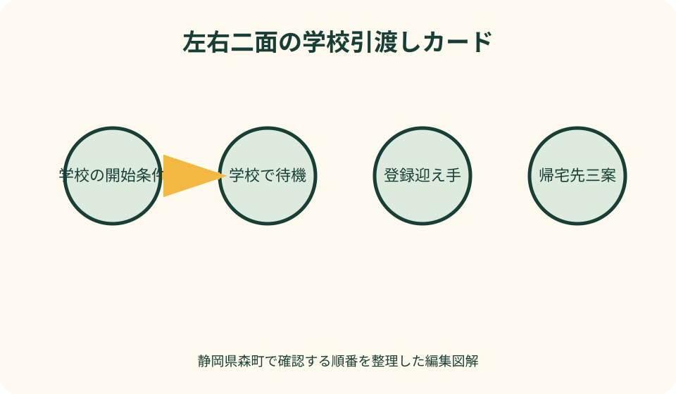
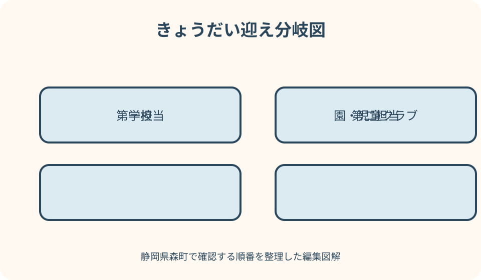

学校・就学・家庭記録｜最終確認 2026-08-10
静岡県森町の学校災害時・家庭カード｜迎え・引渡し・連絡不能を整理
災害時の家庭カードは、家族が独自の迎えルールを学校へ押し付ける紙ではありません。学校が定める待機・引渡し・本人確認を基準に、誰が迎えに行けるか、道路が通れない場合はどうするか、きょうだいをどの順で迎えるか、通信が切れたときに何を推測しないかを家族側で整理するものです。森町の防災情報と学校の最新資料を照合し、一枚を平常時の訓練で更新します。

編集イラスト結論：学校欄と家庭欄を左右に分ける
カードの左側は学校確認欄です。引渡しを始める条件、児童生徒の待機場所、引渡し場所、本人確認、登録可能な迎え手、迎えが来ない場合を、学校資料の言葉で書きます。
右側は家庭実行欄です。第一担当、第二担当、出発地点、移動手段、きょうだいの迎え順、引渡し後の行き先を置きます。学校欄の条件を家庭都合で書き換えません。
中央には「連絡が届かないとき」の境界線を引きます。町の防災情報や他家庭の連絡から学校の引渡し開始を推測せず、学校が平常時に示した確認方法へ戻ります。
カードを持っていることは安全の保証ではありません。災害の種類、校舎や道路の被害、避難先の変更で手順が変わるため、学校と行政の当日の指示を優先します。
学校の引渡しルールを最初に写す
入学・転校時に配布される危機管理や引渡しの資料を探し、年度と改訂日を確認します。見当たらなければ学校へ、最新の配布方法と再交付の可否を尋ねます。
確認するのは、地震、大雨、土砂災害など災害別の判断、授業中・登下校中・休日の違いです。一つの訓練手順がすべての災害へ共通するとは限りません。
引渡しの判断者、開始を知らせる媒体、引渡し場所、必要な確認情報、代理迎えの条件を一項目ずつ書きます。家庭が「身分証があればよい」など追加解釈しません。
文部科学省は、学校が保護者へ防災計画を周知し、引渡し方法や連絡不能時の児童生徒の保護をあらかじめ検討する考え方を示しています。家庭も学校の説明を受けて準備します。
森町の学校と防災窓口を混同しない
森町公式の学校一覧で、在籍校の住所と電話番号、学校教育課の連絡先を確認します。災害時に電話が通じると約束する情報ではなく、平常時の照合に使います。
森町の防災情報ページには、ハザードマップ、町指定避難所、災害用伝言ダイヤルなどの入口があります。学校の引渡しと地域避難は目的が異なるため、同じ場所と決めません。
町の防災メールは防災情報を配信する経路です。学校独自の休校、待機、引渡し連絡が必ず含まれるとは考えず、両方の受信経路を別に確認します。
平常時には、学校の質問は学校へ、町の避難所や防災情報は危機管理の窓口へ尋ねます。一つの部署に家族の計画全体を決定してもらう前提を置きません。
迎え担当は名前だけでなく行動条件を書く
第一迎え担当には、氏名、続柄、学校への登録状況、平日日中の出発地、通常の移動手段を書きます。自宅から近い人ではなく、実際に連絡を受けて動ける人を選びます。
勤務先から出られない可能性がある場合は、上司や職場の連絡方法を確認します。「災害なら必ず帰れる」という期待だけで第一担当にしません。
迎えに出発する条件は、学校からの引渡し連絡、学校があらかじめ示した条件、自身の安全確認に分けます。揺れを感じたら直ちに全員が学校へ向かうルールにしません。
自動車、徒歩、自転車など移動手段は候補として書き、災害時に通れると保証された経路とは扱いません。道路規制、浸水、倒木、渋滞に応じて無理な移動を避けます。
代替の迎え手は学校への登録まで確認する
第二・第三担当を決めても、学校が引渡し対象として把握していなければ、家庭内の約束だけでは足りません。登録様式、続柄、本人確認、更新方法を学校へ尋ねます。
祖父母、親族、近隣の知人へ依頼するときは、本人の同意を得て、学校名、子どもの学年、想定する連絡、迎え後の行き先を共有します。
代理の人が高齢、持病、乳幼児の世話などで移動困難になる可能性も見ます。災害時の負担を一方的に依頼せず、断れる条件と第三案を持ちます。
登録者の変更は家族カードを書き換えるだけで完了しません。学校へ変更を提出した日、受理を確認した日、旧担当へ終了を伝えた日を別々に記します。
引渡し場所と避難所は同一と決めない
森町の指定避難所一覧には学校施設も含まれますが、避難所として開設されることと、在校児童生徒の引渡し場所になることは別の運用です。
校舎が使えない、周辺に危険があるなどの理由で、学校が別場所へ移動する可能性もあります。固定した校門へ家族全員が集まる計画だけにしません。
学校が避難所になった場合は、地域避難者の動線と引渡しの動線が重なる可能性があります。車での進入、待機場所、受付順は当日の指示に従います。
町指定避難所は災害種別や開設状況を確認して利用する場所です。家から近いという理由だけで、引渡し後の帰宅先に自動設定しません。

引渡し後の帰宅先を三案で持つ
第一案は自宅ですが、建物や経路の確認前に戻れると決めません。自宅の安全確認を誰が行い、戻れないときに次へ切り替えるかを書きます。
第二案は親族宅など家族内の集合先です。災害種別ごとの立地、鍵、在宅者、徒歩経路、受入可能性を当事者と確認します。
第三案は町が開設を案内する避難所などです。平常時の一覧に載るだけで、災害時に必ず開いているとは限らないため、開設情報を得る経路を記します。
子どもを引き取った人は、どの帰宅先へ向かうかを他の家族へ残します。通信できなければ、事前に決めた伝言手段と優先順位を使います。
きょうだいの迎え順は学校別の条件で決める
きょうだいが別の学校、園、児童クラブにいる場合は、各施設の引渡し開始条件と待機方針を別々に確認します。一校の開始連絡を全員へ当てはめません。
迎え順は年齢だけでなく、施設の待機体制、移動経路、災害種別、代理担当の配置を踏まえて二案作ります。固定順で無理な横断をしないようにします。
保護者二人が別々の子を迎える計画では、途中で担当を変更しない約束と、通信不能時の初期担当を明記します。互いに相手が行ったと思う空白を防ぎます。
学校から児童クラブへ通常どおり移動するか、災害時は学校待機かも確認します。平日の通常予定を災害時へそのまま適用しません。
連絡不能時は推測せず事前条件へ戻る
配信が届かない場合、まず通信状態、学校が指定する別媒体、町の防災情報を確認します。ただし町の避難情報から学校の引渡し開始を推測しません。
電話が話中のときは、連続発信を繰り返すより、学校が示した再確認時刻や代替手段へ移ります。緊急時の学校電話を家庭の確認だけで占有しないようにします。
災害用伝言ダイヤル一七一やウェブ一七一を家族で使う場合は、登録に使う電話番号、録音する短文、確認順を平常時に練習します。学校連絡の代替と勝手に位置付けません。
文部科学省は、保護者と連絡が取れず引き渡せない場合の児童生徒の保護も学校側で考慮する必要を示しています。迎えが遅れると即座に単独帰宅になるとは考えないでください。
保護者自身の安全を出発条件に入れる
学校から迎えの連絡があっても、保護者がいる建物から出ること自体が危険な場合があります。職場や地域の避難指示に従い、安全を確保してから行動します。
河川沿い、山間部、橋を渡る経路では、普段の最短経路以外も確認します。ただし代替路が災害時に通れるという保証ではなく、道路情報と現地規制を優先します。
自動車で学校へ向かうことが認められるかは、学校の手順を確認します。渋滞や緊急車両の妨げになる可能性を考え、家庭の便利さだけで選びません。
第二担当へ切り替えるときは、自分が行けない理由を長く説明するより、担当変更、子ども、学校、予定行き先を短く伝えます。平常時に文例を用意します。
本人確認と引渡し記録を想定する
学校が引渡しカードや本人確認書類を求める場合は、当日持参する物と、事前登録する情報を区別します。記事が必要書類を一律に決めることはできません。
子どもが迎え手を知っていても、学校の確認を省略できるとは限りません。急いでいるときほど受付順と教職員の確認に従います。
引渡し後は、受取時刻、迎え手、帰宅先を家庭側のカードへ記します。学校側の記録方法を妨げず、落ち着いてから家族へ共有します。
登録していない人しか動けない場合は、現場で教職員へ強く引渡しを迫らず、学校が定める確認や待機に従います。平常時に代替登録を増やせるか相談します。
医療・支援情報は必要最小限の携帯版にする
持病、アレルギー、服薬、コミュニケーション上の支援がある子どもは、引渡し後に必要な情報を別の携帯カードへまとめます。学校の保健記録を無断で複写するのではなく家庭用に作ります。
薬の名称、使用条件、保管、期限は医師・薬剤師の説明で確認します。災害カードを個別の投薬指示として扱わず、学校での薬の引渡し手順も尋ねます。
支援情報には、本人が困ったときの表現、落ち着きやすい説明、避けたい刺激を短く書きます。診断書全体を誰でも見られる首下げカードへ入れません。
避難先や迎え手へ情報を渡す場合は、本人の安全に必要な範囲と共有相手を確認します。カード紛失時を想定し、不要な個人番号は載せません。
訓練では速さより手順の食い違いを探す
学校の引渡し訓練へ参加するときは、到着時間だけで評価せず、配信受信、経路、受付、本人確認、引渡し後の共有を順に試します。
訓練用の条件と実災害の判断が違うことを子どもにも説明します。「訓練では迎えに来たから、地震なら必ずすぐ来る」と約束しません。
第二担当にも可能な範囲で手順を伝え、学校場所、受付、登録名を確認してもらいます。本人が訓練参加できない場合の共有方法も学校へ聞きます。
訓練後は、学校資料と家庭カードの違い、連絡が届かなかった端末、通れなかった経路、きょうだい順の無理を三日以内に修正します。
更新日は年一回でなく変化の都度置く
定期更新は新年度、台風期前、地域防災訓練後など家庭が覚えやすい時期に置きます。最終確認日と次回予定日をカードの表面へ書きます。
臨時更新は、勤務先、電話番号、迎え手、通学先、児童クラブ、住居、薬、道路工事が変わったときです。年度末まで古い情報を使い続けません。
学校へ変更を届ける必要がある項目と、家庭内だけの項目を分けます。学校提出日、受理確認、家庭カード反映の三つを完了させます。
古いカードは回収し、「旧版」と日付を付けて必要期間だけ保管します。複数のかばんや車に異なる版が残らないよう配布先一覧を持ちます。
家庭カードを作る良い点
良い点は、学校が決めることと家庭が決めることの境界が見えることです。迎え担当が学校の引渡し開始を独自判断する混乱を減らせます。
第一担当が動けない場合も、第二担当が学校名、登録状況、帰宅先を一枚で確認できます。電話で長い説明をする余裕がない場面に備えられます。
きょうだいを施設別に並べることで、同時に迎えられない現実を事前に検討できます。家族の人数、勤務、道路を踏まえた代替案を訓練できます。
更新日が明確になり、古い勤務先や電話番号を放置しにくくなります。訓練で見つかった課題を次の版へ反映する循環を作れます。

学校防災案内へ注文したい点
注文したい点は、町の防災ページから地域の避難情報は得られても、各校の引渡し条件、登録者、連絡不能時の待機を一律には確認できないことです。
学校配布の資料には、災害別、在校時・登下校時別、引渡し場所変更時の流れが一枚で示されると家庭が準備しやすくなります。
きょうだいが別施設にいる家庭や、町外勤務、ひとり親、介護を担う家庭では、即時迎えが難しい場合があります。代替登録と待機の説明が重要です。
ただし、詳細を公開しすぎると個人情報や学校安全に影響する事項もあります。家庭は公開ページだけを求めず、在籍者向けの正式資料を適切に保管します。
代案・結論：迎えられない時間を隠さず登録する
町外勤務などで到着まで時間がかかるなら、短く見せるのではなく現実的な時間を学校へ伝えます。待機方針と代替登録を相談する材料になります。
代替者が見つからない場合も、無登録の人へ当日頼む計画を作らず、学校へ現状を相談します。連絡不能時に学校がどう児童生徒を保護するか説明を受けます。
自宅へ戻れない可能性があるなら、親族宅と開設避難所の二案を持ち、どちらへ移るかの情報確認手段を決めます。場所だけを決めて開設・受入れを保証しません。
結論は、最速で迎える競争にしないことです。学校の判断、保護者の安全、本人確認、引渡し後の行き先を切れ目なくつなぐ計画にします。
大石の視点：物件の近さより橋と迎え時間を見る
学校まで直線距離が短くても、川、橋、狭い道、山際を通ると災害時の迎え時間は変わります。私は、住まい選びでは通常経路と代替候補を実際に見ることを勧めます。
ただし内見で歩けた道が災害時にも使えるという保証にはなりません。ハザードマップ、道路情報、学校の引渡し方針を別々に確認します。
祖父母宅に近い物件でも、祖父母が学校の引渡し登録者になれるか、災害時に動けるかは別問題です。本人同意と学校手順を契約判断より前に確かめます。
不動産会社は、避難所の開設、道路の通行、学校の引渡しを約束できません。家族カードに未確認欄を残し、行政・学校の一次情報へ戻すことが現実的です。
記事固有の左右二面引渡しカード
左面は学校基準で、開始条件、連絡媒体、待機場所、引渡し場所、本人確認、未引渡し時の扱いを並べます。学校資料の改訂日も書きます。
右面は家庭計画で、第一・第二担当、出発地点、きょうだい順、帰宅先三案、伝言方法、医療情報の所在を配置します。
中央の赤線には「学校の連絡を推測しない」「保護者の安全を確認」「道路規制に従う」の三条件を置きます。左右のルールを勝手に上書きしない境界です。
裏面には訓練日、届かなかった連絡、変更点、学校へ再確認する質問、次回更新日を記します。作成して終わらず改訂履歴を残します。
きょうだい迎え分岐図の作り方
中央に保護者二人と代替者を置き、外側へ学校、園、児童クラブを配置します。各施設の引渡し開始と待機方針を確認済み・未確認で色分けします。
通常案は担当者から施設へ実線、第二案は点線で結びます。同じ人が同時刻に離れた二施設へ行く線は、計画の矛盾として見つけられます。
各施設から帰宅先へ別の矢印を引きます。全員が自宅へ戻れない場合に、親族宅や開設避難所へ誰が移るかを示します。
図を学校へそのまま提出する必要はありません。学校には該当児童の登録迎え手と連絡先を所定の方法で届け、家庭内の全体図は安全に保管します。
学校へ確認する短い質問集
「災害時に引渡しを始める条件、連絡媒体、引渡し場所、迎えが来られない場合の待機を、今年度の資料で確認したいです」と全体を尋ねます。
代理迎えは「祖父母を第二担当にしたいです。事前登録、本人確認、当日持参物、変更時の届出を教えてください」と具体化します。
きょうだいがいる場合は「別校への迎えと時間が重なる可能性があります。到着が遅れる場合の連絡と待機を確認したいです」と現実の制約を伝えます。
訓練後は「試験配信が第二連絡者に届かず、車の経路も混雑しました。家庭が変更すべき点と学校へ更新する情報を確認したいです」と結果を共有します。
まとめ：学校基準を中心に家庭の分岐を作る
静岡県森町で学校災害時の家庭カードを作るときは、在籍校の最新資料から引渡し開始、待機、場所、本人確認、未引渡し時を先に写します。
家庭側は第一・第二迎え手、出発条件、移動候補、帰宅先、きょうだい順を記します。学校が決める条件へ家庭ルールを上書きしません。
通信不能時は、町の防災情報、学校が指定する別媒体、災害用伝言を役割別に使い、他家庭の情報から引渡しを推測しないようにします。
今日の一歩は、学校の引渡し資料を探し、第一担当、代替者、帰宅先三案、きょうだい順、最終更新日の六欄を埋めることです。空欄を学校への質問にしてください。
公式情報・確認先
掲載内容は次の一次情報を基礎に整理しました。営業、料金、催し、交通は変わるため、出発前または手続き前にリンク先で最新情報を確認してください。
- 小学校・中学校（静岡県森町、2026-08-10確認）
- 学校教育課（静岡県森町、2026-08-10確認）
- 防災情報（静岡県森町、2026-08-10確認）
- 森町防災メール（静岡県森町、2026-08-10確認）
- 町指定避難所等について（静岡県森町、2026-08-10確認）
- 災害に備えて（静岡県森町、2026-08-10確認）
- 学校の危機管理・安全（静岡県教育委員会、2026-08-10確認）
- 学校の危機管理マニュアル作成の手引き（静岡県教育委員会、2026-08-10確認）
- 学校等の防災体制の充実について 第二次報告（文部科学省、2026-08-10確認）